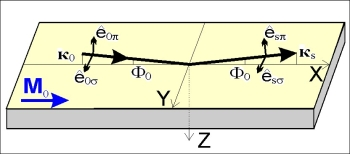
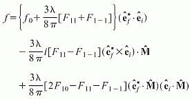

|

This page is a CGI interface to my program MAG_sl simulating x-ray resonant specular reflection from magnetic multilayers with the account for interface roughness or transition layers. In order to use this program please read first the paper by S.Stepanov and S.Sinha "X-ray resonant reflection from magnetic multilayers: Recursion matrix algorithm", Phys. Rev. B, v.61, No 22, p.15302-15311, (2000) on which it is based. In short, there is a resonant increase at the absorption edges of some rare-earth and transition elements in the electric multipole (e.g. quadrupole) part of x-ray scattering amplitude. In this case the scattering amplitude becomes a tensor with the orientation dependent on the orientation of the magnetic moment of respective atom. The x-ray scattering caused by those additional contributions is called "resonant magnetic scattering", although it is electric by nature. When all the magnetic moments are oriented in the same direction, one can probe the magnetization of the media (e.g. thin magnetic film or magnetic multilayer) with x-rays -- see Fig.1. The effect on x-ray scattering is the strongest when the magnetic field is applied along the direction of x-ray incidence (X-axis) and the incident x-rays are circularly polarized. In the other cases the effect may still exist but be less measurable. Again, please find more details in the paper and references therein.The MAG_sl software makes use of the same recursive matrix algorithm (RMA) as other programs on this site: GID_sl, TER_sl, and TRDS_sl. Besides, all of these programs implement very similar input. Therefore, before learning MAG_sl it might be helpful to practice with a simpler software like TER_sl that simulates x-ray specular reflectivity from multilayers with no account for magnetic resonance effects.
This short guide provides some explanations on the MAG_sl data input and outlines the restrictions of this Web interface.
The MAG_sl program is executed on my office PC, that runs a Web server under Windows operating system. Since this PC is shared by all of the WEB users of my x-ray library, please, avoid overloading the server by running multiple tasks at the same time.
To obtain the results from MAG_sl you need to fill out the input form and click on the SUBMIT button. If your input is correct, the results will be presented as a figure and a link to respective downloadable ZIP file that contains all the data. Otherwise, a web page with respective error message will be returned.
In case the calculation succeeds, the downloadable ZIP file will contain the following ASCII files with the results of calculations:
The specification of substrate, x-rays, and scan parameters is pretty straightforward and perhaps does not require any comments.
The specification of surface layer profile is implemented with a simple script language. A typical syntax is:
; comments are allowed in any line, but should not contain special symbols like '"*?$!@% period=15 t=10 code=GaAs w0=0.8 sigma=2 t=10 code=GaAs x=0.3 code2=AlAs x2=0.7 sigma=2 t=10 code=SiGe rho=0.9 sigma=2 t=10 x0=(5e-4,7e-6) tr=5 t=10 w0=.5 tr=4 t=10 w0=0.5 t=10 ; code=Fe t=35 code=Gd t=50 F11=(-0.22,9.35) F1T=(0.37,9.65) mshare=1 mvector=(1 0 0) code=Gd t=50 F11=(-0.22,9.35) F1T=(0.37,9.65) mdensity=2.5 mvector=(1 0 0) end period
Here:
x0=w0*x0
By default, this factor is equal to one. Unlike usual Debye-Waller factor, w0
can be greater than one, because it is simply one more way to specify x0.
See Eq.(17)-(21) in the paper for more details. For some of the magnetic resonances those amplitudes can be found in the Ph. D. thesis by M.D.Hamrick (see Ref.[41] in the paper). Unfortunately I am not aware of any comprehensive tables for those amplitudes. One may consider determining them experimentally.Below is a practical example -- a profile for 15-period Gd/Fe multilayer with 50 Angstroms of resonantly reflecting Gd and 35 Angstroms of non-resonant Fe in each period. The magnetic momenta of all Gd atoms are assumed to be aligned along the direction of incident beam (x-axis):
period=15 code=Gd t=50 F11=(-0.22,9.35) F1T=(0.37,9.65) mshare=1 mvector=(1 0 0) code=Fe t=35 end period
For the rest of parameters you are suggested to follow the common sense. To ensure that your input was correct, please verify respective listing file -- a file with the ".TBL" extension in the ZIPped archive referred from the MAG_sl results screen.
To simplify understanding the MAG_sl you can start with several
templates listed below. They correspond to Figures 3 to 5 of the
paper respectively. All the
templates link to the same program and provide the same functionality.
They differ by preloaded data to demonstrate some possible applications of
MAG_sl.
Besides, when submitting the MAG_sl task, it is
possible to check the progress watching option. The progress watching is
obviously more comfortable, but it might not work with some old Web browsers.
Also, it is a bit slower because of putting an additional load on the network
and launching each 5 seconds a monitoring program on my computer. Welcome to
try both of the ways and choose the most convenient for your needs.
|
|
|
|
Here is a tool to retrieve the results of finished jobs if you know the job ID. Some possible uses of this tool are:
|